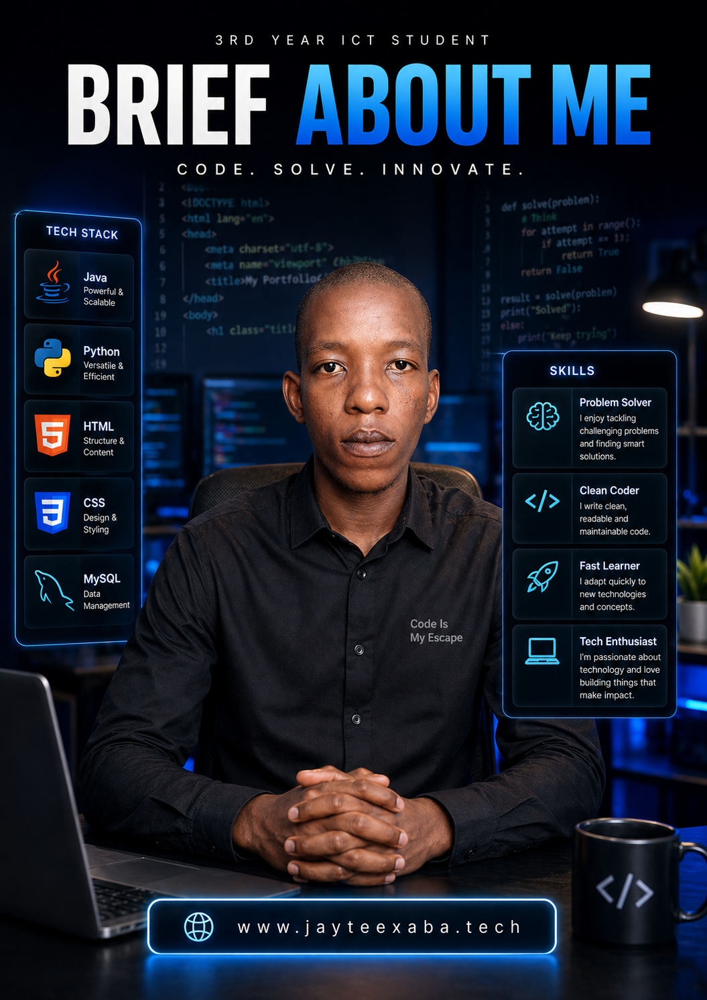

My Name Is Njanyana "Jay-Tee" Xaba
I am from a small town inside the Free State with limited access to technology. Moving to Cape Town to study ICT at CPUT and meeting new people who have different skills changed everything. It opened my eyes to the world of opportunity and showed me the gap between raw potential and real-world exposure. That gap is what fuels me.
While my Higher Certificate and first two years of my diploma gave me a foundation in languages like HTML, CSS, and Java, my real education happened outside the classroom. I taught myself how to deploy sites, manage domains, and solve the problems on which some you don't find in class activities. This journey sparked a love for building things that matter, not just for a grade, but for a purpose.
My Mission: To Build Bridges
This platform, jayteexaba.tech, isn’t just a portfolio, it’s my mission. It exists to show students from any backgrounds whether underserved or not that they are not alone and that greatness can grow anywhere, especially where no one is looking. My professional goals are extensions of this mission:
- Build Real-World Solutions: I seek internships and developer roles not just for a job, but to get into the trenches and build innovative solutions that prove what’s possible, regardless of your starting point.
- Master the Craft: My focus is on deepening my expertise in Java, Python, and JavaScript. A strong technical foundation isn't just for advanced projects; it's the toolbox I'll use to build opportunities for others.
- Connect and Contribute: I actively participate in the tech community to connect with professionals, absorb knowledge, and share my own journey. Every connection is a chance to learn and to lift someone else up.
- Never Stop Learning: The tech world doesn't stand still, and neither do I. I am committed to continuous learning through courses, workshops, and certifications to stay on the front lines of innovation.
Work Integrated Learning (WIL)
I am actively seeking a Work Integrated Learning placement for the upcoming July to November cycle. As a third-year Diploma in ICT student at CPUT, my objective is to join a professional development team in the Cape Town or Bellville area. I am prepared to step out of the classroom and apply my practical experience in full stack development to actual corporate challenges. I invite you to review my official university placement letter below to see how we can organise a valuable partnership.
View Official WIL LetterDream Beyond The Stars
An artwork conceived during a study break, proving that great ideas can spark anytime, anywhere.
View in Portfolio →
Break the Cycle
A bold typographic artwork that serves as a motivational jolt to shift mindsets from "tomorrow" to "today."
View in Portfolio →What Drives Me: Art, Ambition & Authenticity
I love art. I am driven by a deep desire to build something great for people like me—people who don’t always have access or opportunity, who might not have the right tools, but still want to create and belong. I want to share my passion, my authentic self—the real JayTee Xaba—with everyone who knows the struggle. Because, honestly, you can’t outwork someone who is in love with tech the way I am.
For me, technology is more than code: it’s my way to process pain and turn setbacks into something beautiful. No one truly knows how much I’ve given up to get here. All the things I’ve lost, I’ve channeled into this journey—into every line of code, every late-night project, every risk.
This isn’t just about skills or a career. It’s about turning struggle into innovation, and making sure that anyone who feels left out can look at my work and say: “If he can, I can too.”
I’m not done yet. I’m only getting started.